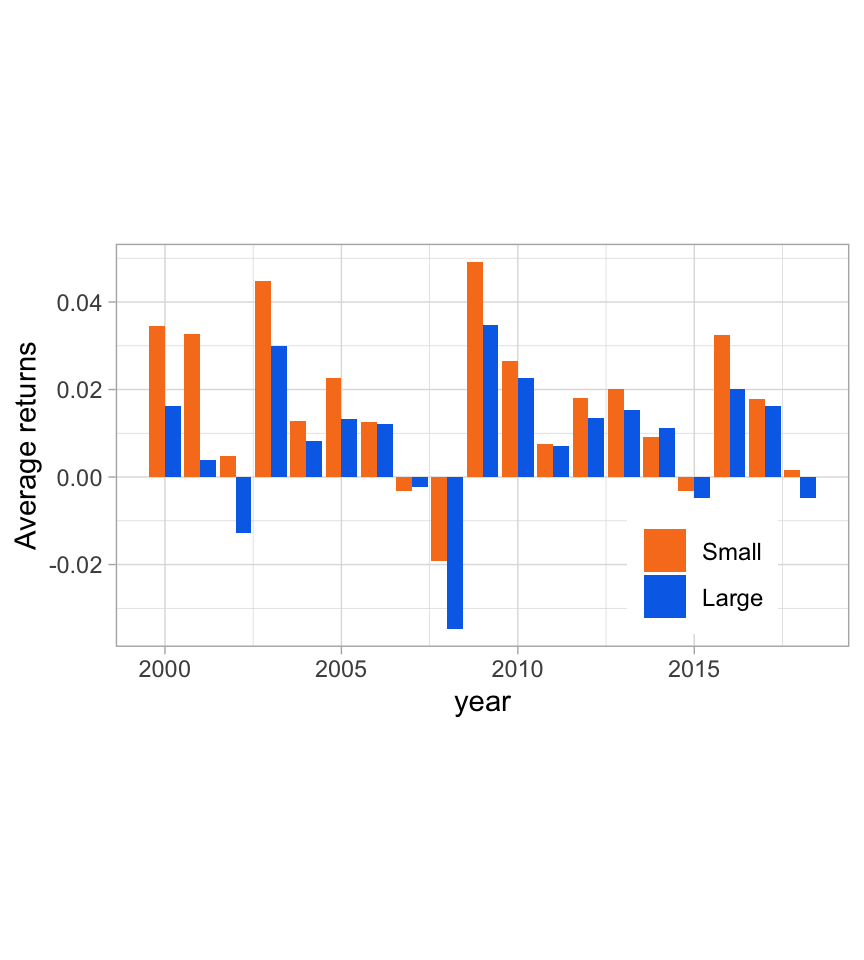
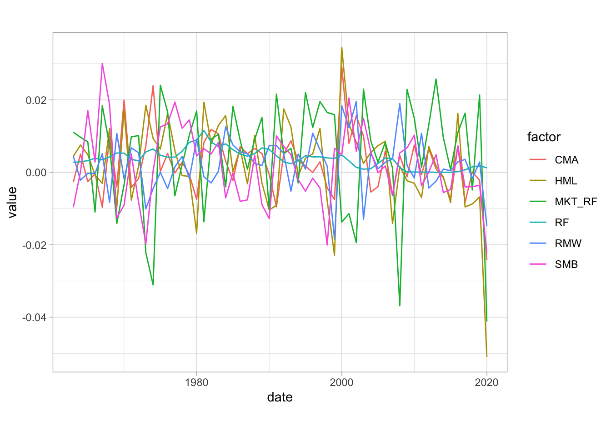
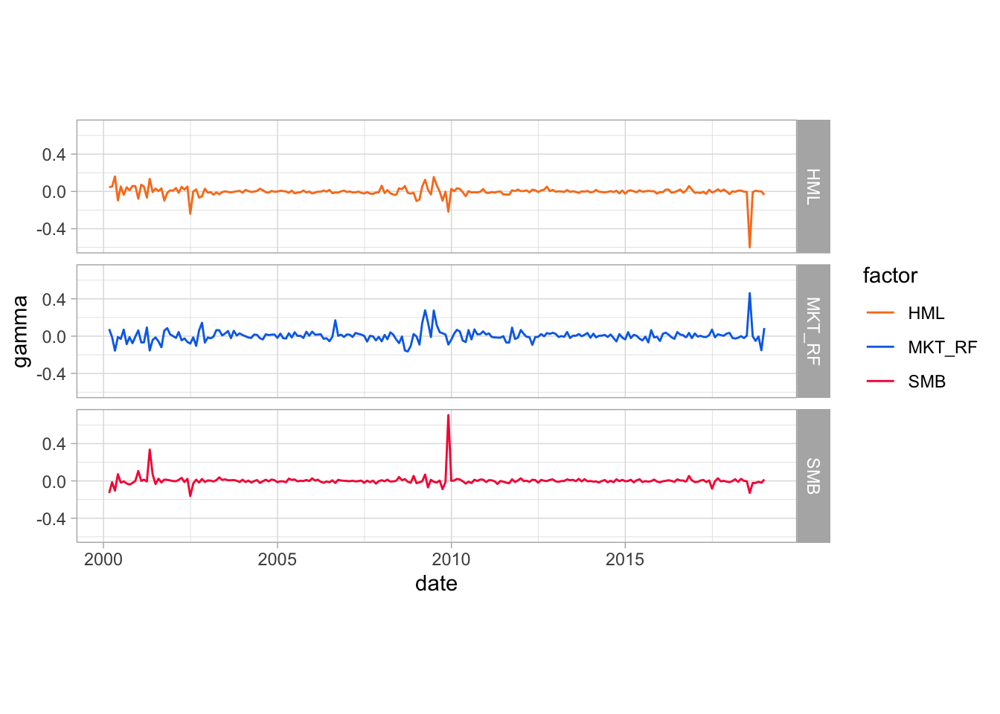
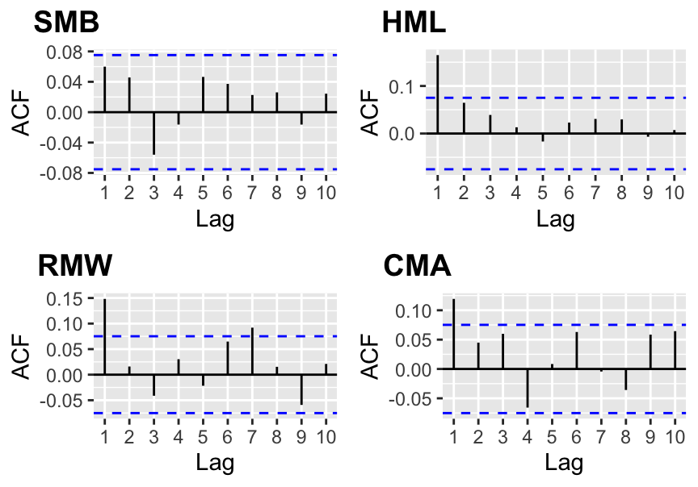

3 因子投资与资产定价异象
资产定价异象是因子投资的基础。在本章中，我们的目标有两个：
- 提出简单的想法和概念：基本因子模型和常见的经验事实（收益率和风险溢价的时变性质）；
- 为读者提供更深入的文章列表，以激发和满足好奇心。
本章的目的并不是对与因子投资相关的许多主题进行全面的阐述。相反，它的目的是提供广泛的概述并涵盖基本主题，以便引导读者找到相关参考文献。因此，它可以作为对文献的简短、非详尽的回顾。金融中的因子建模主题非常广泛，专门针对它的论文数量也很大，并且仍在快速增加。
同行评审的金融期刊可以分为两部分。第一类是学术期刊。他们的文章大多是教授写的，读者也大多是学者。这些文章很长，而且往往是技术性的。突出的例子是《Journal of Finance》、《Review of Financial Studies》 和《Journal of Financial Economics》。第二种更偏向于实践者。这些论文更短，更容易阅读，主要针对金融专业人士。两个标志性的例子是《Journal of Portfolio Management》 和《Financial Analysts Journal》。本章回顾并提及主要发表在第一类期刊上的文章。
除了学术文章之外，还有几本专著专门讨论风格分配主题（理论文章 (Barberis and Shleifer (2003)) 或实践论文 (Clifford Asness et al. (2015)) 中使用的因子投资的同义词）。仅举几例，我们提到：
- Ilmanen (2011)：对许多资产类别的风险溢价进行详尽的探讨，并提供大量描述性统计数据（跨因子和时期），
- Ang (2014)：涵盖因子投资，重点关注资产管理行业，
- Bali, Engle, and Murray (2016)：关于信号的横截面和统计分析（单变量指标、相关性、持久性等）的非常完整的书，
- Jurczenko (2017)：由领域专家提供的各种主题概览（因子纯度、可预测性、选择与加权、因子择时等）。
最后，我们提到一些关于这个主题的广泛论文：Goyal (2012)、Cazalet and Roncalli (2014) 和 Baz et al. (2015)。
3.1 简介
因子投资的话题虽然已有数十年的历史，但随着股票交易基金（ETF）作为投资载体的兴起，它也受到了关注。两者在 2010 年都呈现出强劲的势头。毫不奇怪，实践中的金融工程和学术研究之间的反馈循环以互利的方式推动了双方。从业者依赖关键的学术发现（例如，资产定价异象），而研究人员则更深入地研究实用主题（例如，因子暴露或交易成本）。最近，研究人员还试图量化和界定因子指标对金融市场的影响。例如，Krkoska and Schenk-Hoppé (2019) 分析羊群行为，而 Cong and Xu (2019) 表明复合证券的引入增加了波动性和跨资产相关性。
因子模型的核心目的是了解资产收益率的驱动因子。从广义上讲，因子投资背后的基本原理是，公司的收益率表现取决于因子，无论这些因子是潜在的和不可观察的，还是与内在特征（例如会计比率）相关。事实上，正如 Cochrane (2011) 所构建的那样，第一个基本问题是 哪些特征真正提供了有关平均收益率的独立信息？ 回答这个问题有助于理解收益率的横截面，并可能为其预测打开大门。
理论上，线性因子模型可以被视为 Ross (1976) 套利定价理论 (APT) 的特例，该理论假设资产 \(n\) 的收益率可以建模为基础因子 \(f_k\) 的线性组合： \[\begin{equation} \tag{3.1} r_{t,n}= \alpha_n+\sum_{k=1}^K\beta_{n,k}f_{t,k}+\epsilon_{t,n}, \end{equation}\]
其中线性模型的常见计量经济学约束成立：\(\mathbb{E}[\epsilon_{t,n}]=0\)、\(\text{cov}(\epsilon_{t,n},\epsilon_{t,m})=0\)（对于 \(n\neq m\) 和 \(\text{cov}(\textbf{f}_n,\boldsymbol{\epsilon}_n)=0\)）。如果这些因子确实存在，那么它们就与资产定价的基石模型：Sharpe (1964)、Lintner (1965)和Mossin (1966)的资本资产定价模型(CAPM)相矛盾。事实上，根据 CAPM，收益率的唯一驱动因子是市场投资组合。这解释了为什么因子也被称为“异象”。在 Pesaran and Smith (2021) 中，作者使用 \(\beta_{n,k}\) 的平方和（跨公司）定义因子的强度。
自 Fama and French (1992) 和 Fama and French (1993) 双重发布以来，资产定价异象的经验证据不断积累。这项开创性的工作为元研究的蓬勃发展的研究脉络铺平了道路（例如，Green, Hand, and Zhang (2013)、C. R. Harvey, Liu, and Zhu (2016) 和 McLean and Pontiff (2016)）。回归 (3.1) 可以（无条件）估计一次，也可以在不同的时间窗口内连续评估。在后一种情况下，参数（系数估计）发生变化，模型因此被称为 条件（我们参考 Ang and Kristensen (2012) 和 Cooper and Maio (2019) 来了解该主题的最新结果以及相关研究的详细回顾）。条件模型更加灵活，因为它们承认资产价格的驱动因子可能不是恒定的，这似乎是一个合理的假设。
3.2 检测异象
3.2.1 挑战
显然，关键的一步是能够识别异象，并且不应低估这项任务的复杂性。鉴于出版物偏向于积极结果（例如，参见金融经济学中的 C. R. Harvey (2017)），研究人员经常倾向于报告部分结果，这些结果有时会因进一步的研究而无效。因此，复制的需求很高，许多发现无法延续（Linnainmaa and Roberts (2018)、Johannesson, Ohlson, and Zhai (2020)、Cakici and Zaremba (2021)），特别是如果考虑到交易成本（Patton and Weller (2020)、A. Y. Chen and Velikov (2020)）。然而，正如 A. Y. Chen (2019) 所证明的那样，仅靠 \(p\) 数据窥探无法解释文献中记录的所有异象。降低虚假检测风险的一种方法是提高门槛（通常是 \(t\) 统计），但争论仍在继续（C. R. Harvey, Liu, and Zhu (2016)、A. Y. Chen (2020a)、C. R. Harvey and Liu (2021)），或者诉诸多重测试（C. R. Harvey, Liu, and Saretto (2020)、Vincent, Hsu, and Lin (2020)）。然而，金融中使用的大样本量可能会机械地导致非常低的 \(p\) 值，我们参考 Michaelides (2020) 来讨论这个主题。
一些研究人员记录了因发布而逐渐消失的异象：一旦异象公开，投资者就会对其进行投资，从而推高价格，异象消失。 McLean and Pontiff (2016) 和 Shanaev and Ghimire (2020) 在美国记录了这种效应，但 H. Jacobs and Müller (2020) 发现所有其他国家都经历了持续的发表后因子收益率（另请参见 Zaremba, Umutlu, and Maydubura (2020)）。 A. Y. Chen and Zimmermann (2020) 采用不同的方法，引入了收益率的发表偏差调整，作者指出，这种（负）调整实际上相当小。同样，A. Y. Chen (2020b) 发现 \(p\) 数据窥探无法解释文献中报告的所有异象。 Penasse (2022) 推荐使用 alpha 衰减 的概念来研究异象的持续或衰减（另请参阅 Falck, Rej, and Thesmar (2021) 关于此问题）。 Horenstein (2020)甚至建立了一个模型，让代理人根据学术研究中的异象报告进行投资。
因子溢价的破坏可能是由于羊群效应（Krkoska and Schenk-Hoppé (2019)、Volpati et al. (2020)），并且可能因所谓的 smart-beta 产品（特别是 ETF）的普及而加速，这些产品允许投资者直接投资特定风格（价值型、低波动性等） - 参见 S. Huang, Song, and Xiang (2020)。对于因子投资吸引力的理论视角，我们参考Jin (2019)，对于其对主动型基金行业的影响，我们参考Densmore (2021)。对于将拥挤与因子收益率联系起来的实证研究，我们提到了 Kang, Rouwenhorst, and Tang (2021)。 D. H. Bailey and Lopez de Prado (2021)（来自 Brightman, Li, and Liu (2015)）回想起来，在推出之前，ETF 报告了 5% 的超额收益率，而在推出后，它们的平均收益率为 0%。
另一方面，DeMiguel, Martin Utrera, and Uppal (2019) 认为，智能贝塔领域拥挤对价格的影响可以通过外部机构的交易多元化来减轻，这些机构根据该领域之外的策略进行交易（例如，高频交易者通过订单簿算法进行投注）。
本小节的其余部分受到 Baker, Luo, and Taliaferro (2017) 和 C. Harvey and Liu (2019) 的启发。
3.2.2 简单投资组合排序
这是最常见的过程，也是 Fama and French (1992) 中使用的过程。这个想法很简单。在某一日期，
- 根据特定标准（例如规模、账面市值比）对公司进行排名；
- 根据排名形成由相同数量股票组成的\(J\ge 2\)投资组合（即同质组）（通常根据标准的中位数、三分位数、五分位数或十分位数构建\(J=2\)、\(J=3\)、\(J=5\)或\(J=10\)投资组合）；
- 投资组合中股票的权重要么相等（等权重），要么与市值成正比；
- 在未来的某个日期（通常是一个月），报告投资组合的收益率。
然后，迭代该过程，直到到达样本的时间顺序末尾。
结果是每个分组 \(j\) 的投资组合收益率时间序列 \(r_t^j\)。如果第一组 (\(j=1\)) 和最后一组 (\(j=J\)) 之间的 \(t\) 检验揭示平均收益率存在显著差异，则识别出异象。 Cattaneo et al. (2020) 中描述了更稳健的检验。这种方法的一个很大的限制是排序标准可能对收益率产生非单调影响，并且基于两个极端投资组合的检验无法检测到它。有几篇文章解决了这个问题：例如 Patton and Timmermann (2010) 和 Romano and Wolf (2013)。另一个担忧是，这些排序的投资组合不仅可以捕获与特征相关的已定价风险，还可以捕获一些未定价风险。 K. Daniel et al. (2020) 表明可以将两者分开并充分利用调整后的排序投资组合。
可以根据更多特征对资产进行分组，而不是只关注一种标准。原始论文 Fama and French (1992) 还将市值与账面市值比结合起来。每个特征分为 10 个桶，总共 100 个组合。除了数据可用性之外，排序过程中可以包含的特征数量没有上限。事实上，一些作者研究了更复杂的排序算法，可以管理潜在的大量特征（例如，参见 Feng, Polson, and Xu (2019) 和 Bryzgalova, Pelger, and Zhu (2019)）。
最后，我们参考 Olivier Ledoit, Wolf, and Zhao (2020) 进行考虑资产收益协方差结构的改进，并参考 Cattaneo et al. (2020) 进行排序过程统计特性的理论研究（包括与基于回归的方法的理论联系）。值得注意的是，后一篇论文讨论了投资组合的最佳数量，并表明它可能大于文献中常用的 10 个。
在下面的代码和图 3.1 中，我们计算规模投资组合（等权重：高于与低于市值中位数）。根据规模异象，市值低于中位数的公司平均应该获得更高的收益率。只要图中的橙色条高于蓝色条（大多数情况下都会发生），就会验证这一点。
data_ml %>%
group_by(date) %>%
mutate(large = Mkt_Cap_12M_Usd > median(Mkt_Cap_12M_Usd)) %>% # Creates the cap sort
ungroup() %>% # Ungroup
mutate(year = lubridate::year(date)) %>% # Creates a year variable
group_by(year, large) %>% # Analyze by year & cap
summarize(avg_return = mean(R1M_Usd)) %>% # Compute average return
ggplot(aes(x = year, y = avg_return, fill = large)) + # Plot!
geom_col(position = "dodge") + theme_light() + # Bars side-to-side
theme(legend.position = c(0.8, 0.2)) + # Legend location
coord_fixed(124) + theme(legend.title=element_blank()) + # x/y aspect ratio
scale_fill_manual(values=c("#F87E1F", "#0570EA"), name = "", # Colors
labels=c("Small", "Large")) +
ylab("Average returns") + theme(legend.text=element_text(size=9)) 
图 3.1：规模因子：小型企业与大型企业的平均收益率。
3.2.3 因子
所谓因子的构建遵循与上述相同的思路。投资组合基于一种特征，该因子是一个极端投资组合减去相反极端的多空组合（规模因子为小减去大，或者价值因子为高账面市值比减去低账面市值比率）。有时，微妙之处包括形成二元排序和将多个投资组合聚合在一起，就像 Fama and French (1993) 的原始贡献一样。下面列出了最常见的因子以及一些参考资料。我们参考了本章开头列出的书籍，以更详尽地处理因子特质。对于大多数异象，都提出了理论依据，无论是基于风险的还是行为的。我们在下面列出了最常被引用的因子：
- 规模（SMB = 小公司减去大公司）：Banz (1981)、Fama and French (1992)、Fama and French (1993)、Van Dijk (2011)、Clifford Asness et al. (2018) 和 Astakhov, Havranek, and Novak (2019).
- 价值（HML = 高减低：被低估减去“增长”公司）：Fama and French (1992)、Fama and French (1993)、C. S. Asness, Moskowitz, and Pedersen (2013)。有关最近的讨论，请参阅 Israel, Laursen, and Richardson (2020) 和 Roca (2021)。
- 动量（WML = 赢家减去输家）：Jegadeesh and Titman (1993)、Carhart (1997) 和 C. S. Asness, Moskowitz, and Pedersen (2013)。获胜者是去年收益率最高的资产（有时收益率的计算会被截断以省略上个月）。横截面动量与时间序列动量（趋势跟踪）相关，但不等同，请参见 Moskowitz, Ooi, and Pedersen (2012) 和 Lempérière et al. (2014)。动量还与较高和较低频率发生的反向运动（短期和长期反转）有关，请参阅 Luo, Subrahmanyam, and Titman (2020).
- 盈利能力（RMW = 稳健利润减去弱势利润）：Fama and French (2015)、Bouchaud et al. (2019)。在前一个参考文献中，盈利能力的衡量标准为（收入 - （成本和费用））/权益。
- 投资（CMA = 保守减激进）：Fama and French (2015)、Hou, Xue, and Zhang (2015)。投资通过总资产的增长（除以总资产）来衡量。积极进取的公司是那些资产增长最大的公司。
- 低“风险”（有时，BAB = 反对 beta）：Ang et al. (2006)、Baker, Bradley, and Wurgler (2011)、Frazzini and Pedersen (2014)、Boloorforoosh et al. (2020)、Baker, Hoeyer, and Wurgler (2020) 和 Cliff Asness et al. (2020)。在这种情况下，风险的计算会从一篇文章更改为另一篇文章（简单波动率、市场贝塔值、特殊波动率等）。
除了低风险溢价的显著例外之外，最主流的异象都在 Kenneth French 的数据库 (https://mba.tuck.dartmouth.edu/pages/faculty/ken.french/data_library.html) 中保存和更新。当然，这些因子的计算遵循一组特定的规则，但它们在学术领域被普遍接受。另一个数据源是 AQR 存储库：https://www.aqr.com/Insights/Datasets。
在我们用于书籍的数据集中，我们不是用账面市值比而是用市净率（账面价值位于分母）来代理价值异象。如 Clifford Asness and Frazzini (2013) 所示，值变量的选择可以产生相当大的影响。
下面，我们从 Ken French 的数据库中导入数据。需要注意的是：数据经常更新，有时会经历方法上的变化。我们参考 Akey, Robertson, and Simutin (2021) 来研究常见 Fama-French 因子的此类变化。我们将在本章后面使用这些数据。
library(quantmod) # Package for data extraction
library(xtable) # Package for LaTeX exports
min_date <- "1963-07-31" # Start date
max_date <- "2020-03-28" # Stop date
temp <- tempfile()
KF_website <- "http://mba.tuck.dartmouth.edu/pages/faculty/ken.french/"
KF_file <- "ftp/F-F_Research_Data_5_Factors_2x3_CSV.zip"
link <- paste0(KF_website, KF_file) # Link of the file
download.file(link, temp, quiet = TRUE) # Download!
FF_factors <- read_csv(unz(temp, "F-F_Research_Data_5_Factors_2x3.csv"),
skip = 3) %>% # Check the number of lines to skip!
rename(date = `...1`, MKT_RF = `Mkt-RF`) %>% # Change the name of first columns
mutate_at(vars(-date), as.numeric) %>% # Convert values to number
mutate(date = ymd(parse_date_time(date, "%Y%m"))) %>% # Date in right format
mutate(date = rollback(date + months(1))) # End of month date
FF_factors <- FF_factors %>% mutate(MKT_RF = MKT_RF / 100, # Scale returns
SMB = SMB / 100,
HML = HML / 100,
RMW = RMW / 100,
CMA = CMA / 100,
RF = RF/100) %>%
filter(date >= min_date, date <= max_date) # Finally, keep only recent points
knitr::kable(head(FF_factors), booktabs = TRUE,
caption = "Sample of monthly factor returns.") # A look at the data (see table) | 日期 | MKT_RF | SMB | HML | RMW | CMA | RF |
|---|---|---|---|---|---|---|
| 1963-07-31 | -0.0039 | -0.0041 | -0.0097 | 0.0068 | -0.0118 | 0.0027 |
| 1963-08-31 | 0.0507 | -0.0080 | 0.0180 | 0.0036 | -0.0035 | 0.0025 |
| 1963-09-30 | -0.0157 | -0.0052 | 0.0013 | -0.0071 | 0.0029 | 0.0027 |
| 1963-10-31 | 0.0253 | -0.0139 | -0.0010 | 0.0280 | -0.0201 | 0.0029 |
| 1963-11-30 | -0.0085 | -0.0088 | 0.0175 | -0.0051 | 0.0224 | 0.0027 |
| 1963-12-31 | 0.0183 | -0.0210 | -0.0002 | 0.0003 | -0.0007 | 0.0029 |
在发现这些典型事实之后，一些贡献旨在建立捕捉这些属性的理论模型。我们在下面引用了一些：
- 尺寸和值：Berk, Green, and Naik (1999)、K. D. Daniel, Hirshleifer, and Subrahmanyam (2001)、Barberis and Shleifer (2003)、Gomes, Kogan, and Zhang (2003)、Carlson, Fisher, and Giammarino (2004)、R. D. Arnott et al. (2014)；
- 动量：T. C. Johnson (2002)、Grinblatt and Han (2005)、Vayanos and Woolley (2013)、Choi and Kim (2014)。
此外，最近在基于风险的因子表示和行为理论之间建立了桥梁。我们主要参考 Barberis, Mukherjee, and Wang (2016) 和 K. Daniel, Hirshleifer, and Sun (2020) 以及其中的参考文献。
虽然这些因子（即多空投资组合）表现出随时间变化的风险溢价，并被企业新闻和公告放大（Engelberg, McLean, and Pontiff (2018)），但有充分记录（并被接受），它们在长期范围内提供正收益率。6 我们参考 Gagliardini, Ossola, and Scaillet (2016) 和调查 Gagliardini, Ossola, and Scaillet (2019)，以及相关参考书目，了解有关风险估计程序的技术细节溢价和相应的实证结果。 Ilmanen et al. (2019)、S. Smith and Timmermann (2021) 和 Chib, Zhao, and Zhou (2021) 还进行了记录因子溢价变化的大样本研究。此外，收益率的可预测性也是随时间变化的（如 Farmer, Schmidt, and Timmermann (2019)、Tsiakas, Li, and Zhang (2020) 和 Liu, Pan, and Wang (2020) 中所述），并且可以改进估计方法（T. L. Johnson (2019)）。
在图 3.2 中，我们绘制了每个日历年五个公因子合计的平均月收益率。无风险利率（本身不是一个因子）是最稳定的，而市场因子（市场总收益率减去无风险利率）是最不稳定的。这是有道理的，因为它是五个系列中唯一的多头权益因子。
FF_factors %>%
mutate(date = year(date)) %>% # Turn date into year
gather(key = factor, value = value, - date) %>% # Put in tidy shape
group_by(date, factor) %>% # Group by year and factor
summarise(value = mean(value)) %>% # Compute average return
ggplot(aes(x = date, y = value, color = factor)) + # Plot
geom_line() + coord_fixed(500) + theme_light() # Fix x/y ratio + theme
图 3.2：常见异象的平均收益率（1963-2020 年）。资料来源：肯·法国图书馆。
针对特定因子进行配置因子的投资者的个人属性是一个热门话题。我们在下面列出了一些参考文献，尽管它们在某种程度上超出了本书的范围。 Betermier, Calvet, and Sodini (2017) 表明，与最有能力承担金融风险的成长型投资者相比，价值型投资者年龄更大、更富有，面临的收入风险也更低。研究 Cronqvist, Siegel, and Yu (2015) 得出了不同的结论：它发现投资价值资产与增长资产的倾向源于遗传学和生活事件（后者的影响在 Cocco, Gomes, and Lopes (2020) 中得到证实，前者在 Cronqvist et al. (2015) 的更一般背景下得到进一步详细说明）。心理特征也可以解释一些因子：当智能体进行推断时，它们可能会助长动力（Barberis (2018) 中对这个主题进行了彻底的回顾）。 Bhamra and Uppal (2019) 详细介绍了这些偏好的微观和宏观经济后果。在结束本段时，我们提到还提出了理论模型，将代理人的偏好和信念（通过前景理论）与市场异象联系起来（例如参见 Barberis, Jin, and Wang (2020)）。
最后，我们强调因子溢价可复制性的必要性，并呼应 C. R. Harvey (2020) 最近的社论。正如 Linnainmaa and Roberts (2018) 和 Hou, Xue, and Zhang (2020) 所示，许多宣称的因子实际上非常依赖于数据，并且当投资领域发生变化或变量定义发生变化时（Clifford Asness and Frazzini (2013)），通常无法提供持续的盈利能力。
Campbell Harvey 和他的合著者在一系列论文中试图综合 C. R. Harvey, Liu, and Zhu (2016)、C. Harvey and Liu (2019) 和 C. R. Harvey and Liu (2019) 中因子的研究。他的工作强调了为将异象称为“真实”因子设定高标准的必要性。增加 \(p\) 值的阈值只是部分答案，因为总是可以诉诸数据窥探来找到优化策略，该策略将在样本外失败，但将提供大于 3（甚至 4）的 \(t\) 统计量。 C. R. Harvey (2017) 建议采用贝叶斯方法，将基于数据的重要性与先验混合成所谓的贝叶斯化 p 值（请参阅下面的小节）。
在这项工作之后，研究人员继续探索因子动物园的丰富性。 Bryzgalova, Huang, and Julliard (2019) 提出了一种易于处理的大维因子模型贝叶斯估计，并评估 50 多个因子的所有可能组合，产生数量惊人的组合。这与贝叶斯化 Fama and MacBeth (1973) 过程相结合，可以区分普遍因子和多余因子。 Chordia, Goyal, and Saretto (2020) 使用 200 万个交易策略的模拟来估计 伪发现率，即检测到虚假因子（I 类错误）时的比率。他们还建议使用远高于 3 的 t 统计阈值。同样，C. R. Harvey and Liu (2020) 还强调，有时 真实 异象可能会由于一次性 \(t\) 统计量太低（II 类错误）而被遗漏。
期刊发表积极结果的倾向促使研究人员估计报告收益率与 真实 收益率之间的差异。 A. Y. Chen and Zimmermann (2020) 将这种差异称为 发表偏差 并估计其大约为 12%。也就是说，如果公布的平均收益率为 8%，那么实际值实际上可能更接近 (1-12%)*8%=7%。从定性上来说，12% 的估计值小于 McLean and Pontiff (2016) 中样本外收益率的减少。
3.2.4 预测回归、排序和 p 值问题
为了简单起见，我们假设一个简单的形式： \[\begin{equation} \tag{3.2} \textbf{r} = a+b\textbf{x}+\textbf{e}, \end{equation}\] 其中向量 \(\textbf{r}\) 堆叠了所有股票的所有收益率，而 \(\textbf{x}\) 是滞后变量，因此回归确实具有预测性。如果在给定指定阈值的情况下，估计值 \(\hat{b}\) 显著，那么很容易得出结论：\(\textbf{x}\) 在预测收益率方面做得很好。因此，与 \(\textbf{x}\) 极值相关的多空投资组合（注意 \(\hat{b}\) 的符号）预计会产生利润。不幸的是，这通常是错误的，因为 \(\hat{b}\) 提供了有关 \(\textbf{x}\) 预测收益率的 过去 能力的信息。未来发生的事情或许又是另外一个故事了。
统计检验也用于投资组合排序。假设两个极端的投资组合预计会产生截然不同的平均收益率（例如非常小的股票与非常大的股票，或者强劲的赢家与糟糕的输家）。投资组合收益率写为 \(r_t^+\) 和 \(r_t^-\)。最简单的均值检验是 \(t=\sqrt{T}\frac{m_{r_+}-m_{r_-}}{\sigma_{r_+-r_-}}\)，其中 \(T\) 是观测点数，\(m_{r_\pm}\) 表示收益率均值，\(\sigma_{r_+-r_-}\) 是两个序列之间差值的标准差，即多空投资组合的波动性。简而言之，该统计量可以被视为缩放后的夏普比率（尽管通常这些比率是针对仅做多投资组合计算的），并且可以反过来用于计算 \(p\) 值以评估异象的稳健性。正如Linnainmaa and Roberts (2018)和Hou, Xue, and Zhang (2020)所示，研究人员发现的许多因子在样本外检验中无法存活。
人们对检测到的异象过于乐观的原因之一是对 p 值的广泛反向解释。通常，它被认为是给定数据的一种假设（例如，我的异象存在）的概率。事实上，恰恰相反；这是您的数据样本在知道异象成立的情况下的可能性。 \[\begin{align*} p-\text{value} &= P[D|H] \\ \text{target prob.}& = P[H|D]=\frac{P[D|H]}{P[D]}\times P[H], \end{align*}\] 其中 \(H\) 代表假设，\(D\) 代表数据。第二行中的等式是贝叶斯恒等式的简单应用：有趣的概率实际上是 \(p\) 值的变换。
（至少）有两篇文章讨论了这个想法。 C. R. Harvey (2017)介绍贝叶斯化 \(p\)-值： \[\begin{equation} \tag{3.3} \text{Bayesianized } p-\text{value}=\text{Bpv}= e^{-t^2/2}\times\frac{\text{prior}}{1+e^{-t^2/2}\times \text{prior}} , \end{equation}\] 其中 \(t\) 是从回归中获得的 \(t\) 统计量（即定义 p 值的统计量），先验是分析师对假设（异象）为真的几率的估计。先验编码如下。假设零值成立的概率为 p%（即，异象为 (1-p)%）。赔率编码为 \(p/(1-p)\)。 因此，如果 t 统计量等于 2（大约相当于 5% 的 p 值）并且先验赔率等于 6，则 Bpv 等于 \(e^{-2}\times 6 \times(1+e^{-2}\times 6)^{-1}\approx 0.448\)，并且 null 为 true 的可能性为 44.8%。这种解释与原始 \(p\) 值形成鲜明对比，原始 \(p\) 值不能被视为零成立的概率。当然，一个缺点是先验水平至关重要并且仅由用户指定。
Alexander Chinco, Neuhierl, and Weber (2020) 的工作非常不同，但共享一些关键概念，例如在回归输出中引入贝叶斯先验。他们表明，用 \(L^2\) 约束强制预测回归（参见 5 章中的岭回归）相当于引入关于 \(b\) 真实分布的观点。约束越强，估计值 \(\hat{b}\) 将向零收缩得越多。他们工作中的一个关键思想是假设真实的 \(b\) 在许多异象下的分布。假设它是高斯分布且居中的。有趣的参数是标准差：它越大，发现显著异象的频率就越高。值得注意的是，作者表明该参数随着时间的推移而变化，我们参考原始论文以获取有关该主题的更多详细信息。
3.2.5 Fama-Macbeth 回归
Fama and MacBeth (1973)通过风险溢价的两阶段回归分析提出了另一种检测方法。第一阶段是对关系 (3.1) 的简单估计：在相应的时间序列上逐个股票地运行回归。然后将所得估计值 \(\hat{\beta}_{i,k}\) 插入第二个回归系列中： \[\begin{equation} r_{t,n}= \gamma_{t,0} + \sum_{k=1}^K\gamma_{t,k}\hat{\beta}_{n,k} + \varepsilon_{t,n}, \end{equation}\] 7 理论上，贝塔值是已知的，并且回归将在 \(\beta_{n,k}\) 而不是其估计值上运行。 \(\hat{\gamma}_{t,k}\) 估计因子 \(k\) 在时间 \(t\) 的溢价。在 \(\varepsilon_{t,n}\) 上适当的分布假设下，可以进行统计检验以确定这些溢价是否显著。通常，时间聚合（平均）溢价 \(\hat{\gamma}_k=\frac{1}{T}\sum_{t=1}^T\hat{\gamma}_{t,k}\) 的统计数据： \[t_k=\frac{\hat{\gamma}_k}{\hat{\sigma_k}/\sqrt{T}}\] 通常在纯高斯环境中用于评估因子是否显著（\(\hat{\sigma}_k\) 是 \(\hat{\gamma}_{t,k}\) 的标准差）。
我们参考 Jagannathan and Wang (1998) 和 Petersen (2009) 来进行有关标准普通最小二乘 (OLS) 估计可能引起的精度偏差和损失的技术讨论。此外，由于第二遍回归中的 \(\hat{\beta}_{i,k}\) 是 估计值，因此可能会出现第二级错误（所谓的变量错误）。感兴趣的读者将在 Shanken (1992)、Ang, Liu, and Schwarz (2018) 和 Jegadeesh et al. (2019) 中找到一些扩展和解决方案。
下面，我们对样本执行 Fama and MacBeth (1973) 回归。我们从第一遍开始：贝塔的单独估计。我们在下面构建一个专用函数，并使用一些函数式编程来自动化该过程。我们坚持估计的原始实现并执行同步回归。
nb_factors <- 5 # Number of factors
data_FM <- left_join(data_ml %>% # Join the 2 datasets
dplyr::select(date, stock_id, R1M_Usd) %>% # (with returns...
filter(stock_id %in% stock_ids_short), # ... over some stocks)
FF_factors,
by = "date") %>%
group_by(stock_id) %>% # Grouping
mutate(R1M_Usd = lag(R1M_Usd)) %>% # Lag returns
ungroup() %>%
na.omit() %>% # Remove missing points
pivot_wider(names_from = "stock_id", values_from = "R1M_Usd")
models <- lapply(paste0("`", stock_ids_short,
'` ~ MKT_RF + SMB + HML + RMW + CMA'), # Model spec
function(f){ lm(as.formula(f), data = data_FM, # Call lm(.)
na.action="na.exclude") %>%
summary() %>% # Gather the output
"$"(coef) %>% # Keep only coefs
data.frame() %>% # Convert to dataframe
dplyr::select(Estimate)} # Keep the estimates
)
betas <- matrix(unlist(models), ncol = nb_factors + 1, byrow = T) %>% # Extract the betas
data.frame(row.names = stock_ids_short) # Format: row names
colnames(betas) <- c("Constant", "MKT_RF", "SMB", "HML", "RMW", "CMA") # Format: col names| 常数 | MKT_RF | SMB | HML | RMW | CMA | |
|---|---|---|---|---|---|---|
| 1 | 0.008 | 1.417 | 0.529 | 0.621 | 0.980 | -0.379 |
| 3 | -0.002 | 0.812 | 1.108 | 0.882 | 0.300 | -0.552 |
| 4 | 0.004 | 0.363 | 0.306 | -0.050 | 0.595 | 0.200 |
| 7 | 0.005 | 0.431 | 0.675 | 0.230 | 0.322 | 0.177 |
| 9 | 0.004 | 0.838 | 0.678 | 1.057 | 0.078 | 0.062 |
| 11 | -0.001 | 0.986 | 0.121 | 0.483 | -0.124 | 0.018 |
表中，MKT_RF 表示市场收益率减去无风险利率。相应系数通常称为 beta，尤其是在单变量回归中。随后，我们将表 3.2 中的这些 beta 重新整理，为第二阶段回归做准备。每一行对应一项资产：前 5 列是估计的因子载荷，其余列是逐日期的资产收益率。
loadings <- betas %>% # Start from loadings (betas)
dplyr::select(-Constant) %>% # Remove constant
data.frame() # Convert to dataframe
ret <- returns %>% # Start from returns
dplyr::select(-date) %>% # Keep the returns only
data.frame(row.names = returns$date) %>% # Set row names
t() # Transpose
FM_data <- cbind(loadings, ret) # Aggregate both| MKT_RF | SMB | HML | RMW | CMA | 2000-01-31 | 2000-02-29 | 2000-03-31 | |
|---|---|---|---|---|---|---|---|---|
| 1 | 1.4173293 | 0.5292414 | 0.6206285 | 0.9800055 | -0.3788295 | -0.036 | 0.263 | 0.031 |
| 3 | 0.8120909 | 1.1083495 | 0.8824799 | 0.3002839 | -0.5520309 | 0.077 | -0.024 | 0.018 |
| 4 | 0.3629688 | 0.3061975 | -0.0504485 | 0.5954709 | 0.2003223 | -0.016 | 0.000 | 0.153 |
| 7 | 0.4314569 | 0.6748355 | 0.2303770 | 0.3220782 | 0.1773031 | -0.009 | 0.027 | 0.000 |
| 9 | 0.8381647 | 0.6775922 | 1.0571755 | 0.0777108 | 0.0622119 | 0.032 | 0.076 | -0.025 |
| 11 | 0.9858317 | 0.1205505 | 0.4833864 | -0.1244214 | 0.0175315 | 0.144 | 0.258 | 0.049 |
我们观察到第一列（市场贝塔值）的值围绕 1 旋转，这正是我们所期望的。 最后，我们准备好进行第二轮回归。
models <- lapply(paste("`", returns$date, "`", ' ~ MKT_RF + SMB + HML + RMW + CMA', sep = ""),
function(f){ lm(as.formula(f), data = FM_data) %>% # Call lm(.)
summary() %>% # Gather the output
"$"(coef) %>% # Keep only the coefs
data.frame() %>% # Convert to dataframe
dplyr::select(Estimate)} # Keep only estimates
)
gammas <- matrix(unlist(models), ncol = nb_factors + 1, byrow = T) %>% # Switch to dataframe
data.frame(row.names = returns$date) # & set row names
colnames(gammas) <- c("Constant", "MKT_RF", "SMB", "HML", "RMW", "CMA") # Set col names| 常数 | MKT_RF | SMB | HML | RMW | CMA | |
|---|---|---|---|---|---|---|
| 2000-01-31 | -0.011 | 0.041 | 0.223 | -0.143 | -0.276 | 0.033 |
| 2000-02-29 | 0.014 | 0.075 | -0.133 | 0.052 | 0.085 | -0.036 |
| 2000-03-31 | 0.004 | -0.010 | -0.013 | 0.049 | 0.040 | 0.050 |
| 2000-04-30 | 0.125 | -0.147 | -0.095 | 0.157 | 0.076 | -0.021 |
| 2000-05-31 | 0.052 | -0.011 | 0.074 | -0.096 | -0.095 | -0.056 |
| 2000-06-30 | 0.027 | -0.030 | -0.018 | 0.054 | 0.043 | 0.016 |
从视觉上看，估计溢价也波动很大。我们绘制了市场、SMB 和 HML 因子的估计值。
gammas[2:nrow(gammas),] %>% # Take gammas:
# The first row is omitted because the first row of returns is undefined
dplyr::select(MKT_RF, SMB, HML) %>% # Select 3 factors
bind_cols(date = data_FM$date) %>% # Add date
gather(key = factor, value = gamma, -date) %>% # Put in tidy shape
ggplot(aes(x = date, y = gamma, color = factor)) + # Plot
geom_line() + facet_grid( factor~. ) + # Lines & facets
scale_color_manual(values=c("#F87E1F", "#0570EA", "#F81F40")) + # Colors
coord_fixed(980) + theme_light() # Fix x/y ratio
图 3.3：Fama-Macbeth 回归中的 gamma（溢价）时间序列图。
样本末尾的两个尖峰表示潜在的共线性问题；有两个因子似乎在不明确的总体效应中起到了补偿作用。这强调了惩罚估计的有用性（参见章节 5）。
3.2.6 因子竞争
因子的核心目的是解释股票收益率的横截面。出于理论和实践的原因，最好避免因子内的冗余。事实上，冗余意味着共线性，这会扰乱估计（Belsley, Kuh, and Welsch (2005)）。此外，当资产管理公司将其收益率表现分解为多个因子时，因子之间的重叠（绝对相关性较高）会导致难以解释的风险敞口；正敞口和负敞口相互虚假抵消。
整理冗余因子的一个简单协议是将每个因子与所有其他因子进行回归： \[\begin{equation} \tag{3.4} f_{t,k} = a_k +\sum_{j\neq k} \delta_{k,j} f_{t,j} + \epsilon_{t,k}. \end{equation}\] 有趣的度量是与 \(a_k\) 估计相关的检验统计量。如果 \(a_k\) 与零显著不同，则（其他）因子的横截面无法完整解释因子 \(k\) 的平均收益率。否则，该因子的收益率可以通过其他因子的敞口来捕获，因此是多余的。
该技术的一个主流应用是在 Fama and French (2015) 中进行的，其中作者表明，在考虑其他四个因子（市场、SMB、RMW 和 CMA）时，HML 因子是多余的。下面，我们在更新的样本上重现了他们的分析。我们直接从 Kenneth French 维护的数据库开始分析。
我们可以通过方程 (3.4) 中定义的过程运行回归来确定因子的冗余度。
factors <- c("MKT_RF", "SMB", "HML", "RMW", "CMA")
models <- lapply(paste(factors, ' ~ MKT_RF + SMB + HML + RMW + CMA-',factors),
function(f){ lm(as.formula(f), data = FF_factors) %>% # Call lm(.)
summary() %>% # Gather the output
"$"(coef) %>% # Keep only the coefs
data.frame() %>% # Convert to dataframe
filter(rownames(.) == "(Intercept)") %>% # Keep only the Intercept
dplyr::select(Estimate,`Pr...t..`)} # Keep the coef & p-value
)
alphas <- matrix(unlist(models), ncol = 2, byrow = T) %>% # Switch from list to dataframe
data.frame(row.names = factors)
# alphas # To see the alphas (optional)我们从方程 ((3.4)) 获得 \(\alpha\) 值的向量。下面，我们将这些数字与 \(p\) 值阈值一起格式化，并将其导出到汇总表中。系数的显著性水平编码如下：\(0<(***)<0.001<(**)<0.01<(*)<0.05\)。
results <- matrix(NA, nrow = length(factors), ncol = length(factors) + 1) # Coefs
signif <- matrix(NA, nrow = length(factors), ncol = length(factors) + 1) # p-values
for(j in 1:length(factors)){
form <- paste(factors[j],
' ~ MKT_RF + SMB + HML + RMW + CMA-',factors[j]) # Build model
fit <- lm(form, data = FF_factors) %>% summary() # Estimate model
coef <- fit$coefficients[,1] # Keep coefficients
p_val <- fit$coefficients[,4] # Keep p-values
results[j,-(j+1)] <- coef # Fill matrix
signif[j,-(j+1)] <- p_val
}
signif[is.na(signif)] <- 1 # Kick out NAs
results <- results %>% round(3) %>% data.frame() # Basic formatting
results[signif<0.001] <- paste(results[signif<0.001]," (***)") # 3 star signif
results[signif>0.001&signif<0.01] <- # 2 star signif
paste(results[signif>0.001&signif<0.01]," (**)")
results[signif>0.01&signif<0.05] <- # 1 star signif
paste(results[signif>0.01&signif<0.05]," (*)")
results <- cbind(as.character(factors), results) # Add dep. variable
colnames(results) <- c("Dep. Variable","Intercept", factors) # Add column names
| 部门。多变的 | 截距 | MKT_RF | SMB | HML | RMW | CMA |
|---|---|---|---|---|---|---|
| MKT_RF | 0.008 (***) | 不适用 | 0.257 (***) | 0.12 | -0.363 (***) | -0.945 (***) |
| SMB | 0.003 (*) | 0.131 (***) | 不适用 | 0.083 | -0.435 (***) | -0.139 |
| HML | -0.001 | 0.032 | 0.044 | 不适用 | 0.169 (***) | 1.027 (***) |
| RMW | 0.004 (***) | -0.096 (***) | -0.225 (***) | 0.165 (***) | 不适用 | -0.319 (***) |
| CMA | 0.002 (***) | -0.112 (***) | -0.032 | 0.45 (***) | -0.144 (***) | 不适用 |
我们确认，当资产定价模型中存在其他四个因子时，HML 因子仍然是多余的。我们获得的数据与原始论文 (Fama and French (2015)) 中的数据非常接近，这是有道理的，因为我们只在初始样本上添加了 5 年。
在更宏观的层面上，研究人员还试图根据经验观察到的数据（以及可能由计量经济学家制定的先验数据）找出最有可能的模型（即因子组合）。例如，该文献试图量化 Fama and French (1993) 的 3 因子模型在多大程度上优于 Fama and French (2015) 中的 5 因子模型。在这个方向上，De Moor, Dhaene, and Sercu (2015) 引入了一种针对 p 值的新颖计算，用于比较两个模型通过零 alpha 测试的相对可能性。更一般地说，Barillas and Shanken (2018) 的贝叶斯方法随后被 Chib, Zeng, and Zhao (2020) 改进 - 另请参见 Chib and Zeng (2020) 和 Chib et al. (2020)（前者有一个 R 包：czfactor）。从交易成本角度讨论模型比较，我们参考S. A. Li, DeMiguel, and Martin-Utrera (2020)。
最后，即使是最佳的因子数量也是近期工作结论中存在分歧的一个主题。虽然传统文献侧重于有限数量（3-5）个因子（另见 Hwang and Rubesam (2021)），但 DeMiguel et al. (2020)、A. He, Huang, and Zhou (2020)、Kozak, Nagel, and Santosh (2019) 和 Freyberger, Neuhierl, and Weber (2020) 的最新研究主张需要使用至少 15 个或更多（相比之下，Kelly, Pruitt, and Su (2019) 认为少数 潜在因子可能就足够了）。 Green, Hand, and Zhang (2017)甚至发现有助于解释收益率横截面的特征数量随时间变化。8
3.2.7 先进技术
越来越多的因子加上它们在资产管理中的重要性，促使研究人员制定更微妙的方法，以便“组织”所谓的 因子动物园，更重要的是，检测虚假异象并比较不同的资产定价模型规范。我们在下面列出了其中的一些。
- Feng, Giglio, and Xiu (2020) 将 LASSO 选择与 Fama-MacBeth 回归相结合，以测试新的因子模型是否值得。他们量化了在一组预定义因子中添加一个新因子的收益，并表明 2010 年发表的论文中报告的许多因子并没有增加太多增量价值；
- C. Harvey and Liu (2019)（以类似的方式）在正交因子上使用引导程序。他们认为预测变量之间的相关性是一个主要问题，他们的方法旨在解决这个问题。他们冗长的程序旨在测试候选变量的最大附加贡献是否显著；
- Fama and French (2018) 通过平方最大夏普比率比较资产定价模型；
- Giglio and Xiu (2019) 使用基于主成分分析的三遍法估计因子风险溢价；
- Pukthuanthong, Roll, and Subrahmanyam (2018) 通过主成分分析和 Fama and MacBeth (1973) 回归相结合，分离定价和非定价因子；
- Gospodinov, Kan, and Robotti (2019) 警告因子错误指定（当回归变量列表中包含虚假因子时）。交易因子（\(resp.\) 宏观经济因子）似乎更有可能（\(resp.\) 不太可能）产生可靠的识别（另见 Bryzgalova (2019)）。
显然不存在万无一失的方法，但该领域的贡献数量凸显了对鲁棒性的需求。在根据因子直觉制定投资决策时，这显然是一个主要问题。短期策略的一个主要障碍是因子可能随时间变化的特征。例如，我们参考 Ang and Kristensen (2012)、Cooper and Maio (2019) 和 Briere and Szafarz (2021) 来获得实际结果，并参考 Gagliardini, Ossola, and Scaillet (2016) 和 S. Ma et al. (2020) 来获得更多理论处理（带有额外的经验结果）。
3.3 因子或特征？
由于解释简单，将收益率分解为线性因子模型很方便。尽管如此，学术文献中对于企业收益率究竟是通过宏观经济因子还是仅仅通过企业特征来解释仍存在争议。在他们的早期研究中，Lakonishok, Shleifer, and Vishny (1994) 认为，对价值溢价的一种解释来自于对过去盈利增长率的错误推断。投资者对受近期盈利能力影响的公司过于乐观。因此，未来收益率（也）由公司的核心（会计）特征驱动。那么问题是在解释收益率时弄清楚哪种效应最明显：特征与宏观经济因子敞口。
在该主题的开创性贡献中，K. Daniel and Titman (1997) 提供了支持前者的证据（两篇后续论文是 K. Daniel, Titman, and Wei (2001) 和 K. Daniel and Titman (2012)）。他们表明，账面市值比较高或资本规模较小的公司表现出较高的平均收益率，即使它们在 HML 或 SMB 因子上承受负载荷。因此，看起来确实重要的是内在特征，而不是因子敞口。有关特征在收益率解释或预测中的作用的更多材料，我们参考以下贡献：
- Haugen and Baker (1996) 根据公司特征估计预测回归，并表明可以根据结果预测构建有利可图的投资组合。随后 Guo (2020) 通过自适应 LASSO 增强了该方法。
- 第 2.5.2 节。在 Goyal (2012) 2010 年前关于该主题的调查结果中；
- Chordia, Goyal, and Shanken (2019) 发现，相比因子载荷，特征解释了估计预期收益率中更大比例的变化；
- Kozak, Nagel, and Santosh (2018) 将基于因子的溢价解释与理论模型相协调，其中一些投资者的需求是情绪驱动的；
- Han et al. (2019) 通过惩罚回归显示，20 到 30 个特征（共 94 个）对于预测美国股票的月收益率有用。他们的方法很有趣：他们根据特征回归收益率来建立预测，然后回归预测的收益率来评估它们是否可靠。后一个回归使用 LASSO 型惩罚（参见章节 5），以便从模型中排除无用的特征。惩罚扩展到D. Rapach and Zhou (2019).
中的elasticnet
- Kelly, Pruitt, and Su (2019) 和 S. Kim, Korajczyk, and Neuhierl (2019) 都是估计模型，其中 因子 是 潜在，但载荷（beta）和可能的 alpha 取决于特征。 Kirby (2020) 通过引入机制切换来推广第一种方法。相比之下，Lettau and Pelger (2020a) 和 Lettau and Pelger (2020b) 估计潜在因子，而与特定特征没有任何联系（并提供其方法的大样本渐近特性）。
- 与 Hoechle, Schmid, and Zimmermann (2018)、Gospodinov, Kan, and Robotti (2019) 和 Bryzgalova (2019) 一样，讨论在使用产生多空收益率的投资组合排序时出现的潜在错误。作者表明，在某些情况下，基于此程序的测试可能具有欺骗性。当选择执行排序的特征与外部（不可观察的）因子相关时，就会发生这种情况。他们提出了一种新颖的基于回归的方法，旨在绕过这个问题。
最近，在一个单独的文献中，R. S. J. Koijen and Yogo (2019) 引入了一种需求模型，其中投资者根据他们对特定公司特征的偏好来形成他们的投资组合。他们表明，这使他们能够模仿大型机构投资者的投资组合。在他们的模型中，总需求（以及价格）与特征直接相关，而不是与因子相关。在后续论文中，R. S. Koijen, Richmond, and Yogo (2019) 表明，几组特征足以预测未来收益率。他们还表明，根据英国和美国的机构持股，最大的投资者是那些对价格形成最有影响力的投资者。类似地，Betermier, Calvet, and Jo (2019) 得出了一个优雅的（理论）一般均衡模型，该模型产生了一些有据可查的异象（规模、账面市值比）。 R. D. Arnott et al. (2014)和Alti and Titman (2019)的模型理论上也能够生成已知的异象。最后，在 I. Martin and Nagel (2019) 中，特征通过其在股息增长的可预测性中所发挥的作用来影响收益率。本文讨论了当资产数量和特征数量成正比并且都增加到无穷大时的渐近情况。
3.4 热门话题：动量、择时和 ESG
3.4.1 因子动量
最近的一系列文献揭示了因子收益率的时间序列动量属性。例如，T. Gupta and Kelly (2019) 报告这些收益率中的自相关模式具有统计显著性。9 在 Falck, Rej, and Thesmar (2022) 中获得了类似的结果。同样，R. D. Arnott et al. (2021) 证明，Moskowitz and Grinblatt (1999) 中发现的行业动力实际上可以用这个因子动力来解释。更进一步，Ehsani and Linnainmaa (2022) 得出的结论是，原始动量因子实际上是所有其他因子中都存在的自相关的聚合。最近，Fan et al. (2021) 仔细审视了因子动量的强度。作者发现它仅对少数因子有效。
认识到因子动量的盈利能力，H. Yang (2020b) 试图了解其来源，并将股票因子动量投资组合分解为两个组成部分：因子时机投资组合和静态投资组合。前者寻求从因子收益率的序列相关性中获利，而后者则试图利用因子溢价。作者表明，静态投资组合可以解释大部分因子动量收益率。在 H. Yang (2020a) 中，同一作者提出了一种新的估计器来衡量因子动量的可预测性。 Leippold and Yang (2021) 中提供了注意事项。
最后，Garcia, Medeiros, and Ribeiro (2021) 记录了每日频率的动量。
根据 Ken French 网站上获得的数据，我们计算因子的自相关函数 (ACF)。我们记得 \[\text{ACF}_k(\textbf{x}_t)=\mathbb{E}[(\textbf{x}_t-\bar{\textbf{x}})(\textbf{x}_{t+k}-\bar{\textbf{x}})].\]
library(cowplot) # For stacking plots
library(forecast) # For autocorrelation function
acf_SMB <- ggAcf(FF_factors$SMB, lag.max = 10) + labs(title = "") # ACF SMB
acf_HML <- ggAcf(FF_factors$HML, lag.max = 10) + labs(title = "") # ACF HML
acf_RMW <- ggAcf(FF_factors$RMW, lag.max = 10) + labs(title = "") # ACF RMW
acf_CMA <- ggAcf(FF_factors$CMA, lag.max = 10) + labs(title = "") # ACF CMA
plot_grid(acf_SMB, acf_HML, acf_RMW, acf_CMA, # Plot
labels = c('SMB', 'HML', 'RMW', 'CMA')) 
图 3.4：公因子投资组合的自相关图。
在所选的四个系列中，只有尺寸因子在一阶上不显著自相关。
3.4.2 因子择时
鉴于有大量证据表明因子溢价随时间变化，我们有理由怀疑是否可以预测因子何时表现良好或表现不佳。关于择时有效性的证据多种多样：最近对 Greenwood and Hanson (2012)、Hodges et al. (2017)、Hasler, Khapko, and Marfe (2019)、Haddad, Kozak, and Santosh (2020)、Lioui and Tarelli (2020) 和 Neuhierl et al. (2023) 的证据为正，但 Clifford Asness et al. (2017) 的证据为负，而 Dichtl et al. (2019) 的证据则混合。大多数积极的发现可能是由于对积极结果的偏见，但这纯粹是猜测。
对于使用哪些预测变量尚未达成共识（Hodges et al. (2017) 中的一般宏观经济指标、Greenwood and Hanson (2012) 中的股票发行与回购以及 Dichtl et al. (2019) 中的汇总基本数据）。 Leippold and Rüegg (2020) 提出了一种为具有可持续交易成本的多头投资组合构建合理择时策略的方法。特征的横截面用于 Kagkadis et al. (2021) 中的因子择时目的。在Vincenz and Zeissler (2021)中，发现宏观变量最适合此目的。在基于机器学习的因子投资中，可以通过将公司特定属性与大规模经济数据相结合来采用更精细的粒度，正如我们在 4.7.2 节中所解释的那样。
3.4.3 绿色因子
2010 年十年间，对道德金融产品的需求急剧上升，从而催生了专门用于社会责任投资的基金（SRI - 参见 Camilleri (2020)）。尽管这种现象并不是什么新鲜事（Schueth (2003)、Hill et al. (2007)），但其加速推动了关于与 ESG 标准（环境、社会、治理）相关的特征是否已定价的研究。数十篇甚至可能数百篇论文专门讨论了这个问题，但尚未达成共识。研究人员越来越多地研究气候变化的财务影响（参见 Bernstein, Gustafson, and Lewis (2019)、Hong, Li, and Xu (2019) 和 Hong, Karolyi, and Scheinkman (2020)）以及社会对负责任企业行为的推动（Fabozzi (2020)、Kurtz (2020)）。 我们在下面收集了一份非常简短的论文列表，这些论文表明了相互矛盾的结果：
- 有利的：ESG投资有效（Kempf and Osthoff (2007)，Cheema-Fox et al. (2020)），可以有效（Nagy, Kassam, and Lee (2016)，Alessandrini and Jondeau (2020)），或者至少可以变得高效（Branch and Cai (2012)）。一项大型荟萃研究报告了压倒性的有利结果（Friede, Busch, and Bassen (2015)），但当然，它们很可能源于对积极结果的出版偏见。
- 不利：根据Adler and Kritzman (2008)和Blitz and Swinkels (2020)，道德投资是无利可图的。 ESG 因子应该是做多不道德公司和做空道德公司 (Lioui (2018))。
- 混合：ESG 投资可能在全球范围内有益，但在本地则不然 (Chakrabarti and Sen (2020))。依赖 ESG 筛选的投资组合的表现并不明显优于未筛选的投资组合，但波动性较低（Gibson et al. (2020)、Gougler and Utz (2020)）。通常情况下，细节决定成败，结果取决于是使用 E、S 还是 G (Bruder et al. (2019))。
除了这些相互矛盾的结果之外，还有几篇文章指出了 ESG 衡量的复杂性。根据所选标准和数据提供者，结果可能会发生巨大变化（请参阅 Galema, Plantinga, and Scholtens (2008)、Berg, Koelbel, and Rigobon (2020) 和 Atta-Darkua et al. (2020)）。
我们在结束这一小节时指出，ESG 标准当然可以直接集成到 ML 模型中，就像在 Franco et al. (2020) 中所做的那样。
3.5 与机器学习的联系
鉴于数据可用性呈指标级增长，任何资产管理者的明显诱惑就是尝试从公司层面可用的丰富属性中推断未来收益率。我们提到了会计比率等经典数据和情绪等替代数据。这项任务正是机器学习的目标。给定大量预测变量 (\(\mathbf{X}\))，目标是通过 (2.1) 形式的模型来预测未来表现的代理 \(\mathbf{y}\)。
如果基本面数据（会计比率、盈利、相对估值等）有助于预测收益率，那么一项改进就是预先预测这些基本面数据。这可以支持预测变化或获得信息优势。最近在这个方向上的贡献包括 K. Cao and You (2020) 和 D. Huang et al. (2020)。
早期已经进行了一些尝试，旨在用公司属性（例如 Brandt, Santa-Clara, and Valkanov (2009)、Hjalmarsson and Manchev (2012)、Ammann, Coqueret, and Schade (2016)、DeMiguel et al. (2020) 和 McGee and Olmo (2020)）来解释和预测收益率，但最初并没有任何 机器学习意图或焦点。回想起来，这些方法确实与机器学习工具有一些共同之处。一般公式如下。在时间 \(T\) 时，代理人或投资者寻求解决以下程序： \[\begin{align*} \underset{\boldsymbol{\theta}_T}{\max} \ \mathbb{E}_T\left[ u(r_{p,T+1})\right] = \underset{\boldsymbol{\theta}_T}{\max} \ \mathbb{E}_T\left[ u\left(\left(\bar{\textbf{w}}_T+\textbf{x}_T\boldsymbol{\theta}_T\right)'\textbf{r}_{T+1}\right)\right] , \end{align*}\] 其中 \(u\) 是一些效用函数，\(r_{p,T+1}=\left(\bar{\textbf{w}}_T+\textbf{x}_T\boldsymbol{\theta}_T\right)'\textbf{r}_{T+1}\) 是投资组合的收益率，它被定义为基准 \(\bar{\textbf{w}}_T\) 加上与该基准的一些偏差，这些偏差是特征 \(\textbf{x}_T\boldsymbol{\theta}_T\) 的线性函数。上述规划可能会受到一些外部限制（例如限制杠杆）。
在实践中，向量 \(\boldsymbol{\theta}_T\) 必须使用过去的数据（从 \(T-\tau\) 到 \(T-1\)）进行估计：智能体寻求以下解决方案 \[\begin{align} \tag{3.5} \underset{\boldsymbol{\theta}_T}{\text{max}} \ \frac{1}{\tau} \sum_{t=T-\tau}^{T-1} u \left( \sum_{i=1}^{N_T}\left(\bar{w}_{i,t}+ \boldsymbol{\theta}'_T \textbf{x}_{i,t} \right)r_{i,t+1} \right) \end{align}\]
在大小为 \(\tau\) 的样本上，其中 \(N_T\) 是宇宙中资产的数量。上述公式可以被视为一个学习任务，其中选择参数以使奖励（平均收益率）最大化。
3.5.1 最近参考文献的简短列表
独立于基于特征的方法，机器学习在金融领域的应用已经蓬勃发展，最初仅使用价格数据，后来整合公司特征作为预测因子。我们在下面引用了一些参考文献，按方法论分组：
- 惩罚二次规划：Goto and Xu (2015)、Ban, El Karoui, and Lim (2016) 和 Perrin and Roncalli (2019)，
- 正则化预测回归：D. E. Rapach, Strauss, and Zhou (2013) 和 Alexander Chinco, Clark-Joseph, and Ye (2019)，
- 支持向量机：L.-J. Cao and Tay (2003)（以及其中的参考文献），
- 模型比较和/或聚合：K. Kim (2003)、W. Huang, Nakamori, and Wang (2005)、Matı́as and Reboredo (2012)、Reboredo, Matı́as, and Garcia-Rubio (2012)、Dunis et al. (2013)、Gu, Kelly, and Xiu (2020b)、Guida and Coqueret (2018b) 和 Tobek and Hronec (2021)。后两篇最近的文章具有广泛的特征。
我们分别在 6、7 和 16 章中提供了基于树的方法、神经网络和强化学习技术的更详细列表。此外，我们参考 Ballings et al. (2015) 进行分类器的比较，并参考 Henrique, Sobreiro, and Kimura (2019) 和 Bustos and Pomares-Quimbaya (2020) 进行基于 机器学习的预测技术的调查。
3.5.2 与资产定价模型的显式连接
因子投资和资产定价之间第一个明显的联系是（平均）收益率预测。主要的规范学术参考文献是Gu, Kelly, and Xiu (2020b)。我们先写出一般方程，然后对其进行评论： \[\begin{equation} \tag{3.6} r_{t+1,n}=g(\textbf{x}_{t,n}) + \epsilon_{t+1}. \end{equation}\]
有趣的讨论在于上述模型与方程 (3.1) 之间的差异。第一个明显的区别是非线性函数 \(g\) 的引入：实际上，没有理由（除了简单性和可解释性之外）我们应该将模型限制为线性关系。资产定价内核中非线性的早期参考文献之一是 Bansal and Viswanathan (1993)。
更重要的是，(3.6) 和 (3.1) 之间的第二个区别是时间索引的偏移。事实上，从投资者的角度来看，感兴趣的是能够预测资产横截面结构的一些信息。用同步因子来解释资产收益率是没有用的，因为因子值的实现是事先未知的。因此，如果想要从模型中提取价值，则在状态空间的观察（我们称之为 \(\textbf{x}_{t,n}\)）和收益率的发生之间需要有一个时间间隔。一旦估计了模型 \(\hat{g}\)，时间 \(t\)（可测量）值 \(g(\textbf{x}_{t,n})\) 将给出（平均）未来收益率的预测。然后，这些预测可以作为投资组合权重设计中的信号（有关该主题的更多信息，请参阅第 12 章）。
虽然大多数研究确实涉及 l.h.s. 的收益率。 (3.6)，没有理由不使用其他指标。收益率简单明了且易于计算，但它们很可能被更复杂的指标所取代，例如夏普比率。然后，公司的特征将用于预测风险调整后的业绩，而不是简单的收益率。
除了方程 (3.6) 的显式形式之外，还可以使用其他几种与 ML 相关的工具来估计资产定价模型。这可以通过多种方式实现，下面列出了其中一些方式。
首先，资产定价中的一个主流问题是表征随机贴现因子（SDF）\(M_t\)，它对于任何资产 \(n\) 都满足 \(\mathbb{E}_t[M_{t+1}(r_{t+1,n}-r_{t+1,f})]=0\)（参见 Cochrane (2009)）。该方程是广义矩法 (Hansen (1982)) 的自然竞争环境：\(M_t\) 必须使得 \[\begin{equation} \tag{3.7} \mathbb{E}[M_{t+1}R_{t+1,n}g(V_t)]=0, \end{equation}\] 其中工具变量 \(V_t\) 是 \(\mathcal{F}_t\) 可测量的（即在时间 \(t\) 已知），大写 \(R_{t+1,n}\) 表示资产 \(n\) 的超额收益率。为了减少和简化估计问题，习惯上将 SDF 定义为资产组合（参见Back (2010)中的第3章）。在 Luyang Chen, Pelger, and Zhu (2020) 中，作者使用生成对抗网络（GAN，参见第 7.7.1 节）来估计在强惩罚形式下最接近满足 (3.7) 的投资组合的权重。
第二种方法是尝试将资产收益率建模为因子的线性组合，就像 (3.1) 中那样。我们用紧凑的符号\[r_{t,n}=\alpha_n+\boldsymbol{\beta}_{t,n}'\textbf{f}_t+\epsilon_{t,n},\]来写 我们允许载荷 \(\boldsymbol{\beta}_{t,n}\) 与时间相关。关键是在上式中引入公司特征。传统上，这些特征存在于因子的定义中（如 Fama and French (1993) 的开创性定义）。收益率的分解是根据公司收益率对根据市场规模、会计比率、过去业绩等构建的这些因子的阐述而进行的。给定风险敞口，股票的表现归因于特定的风格概况（例如，小型股票或价值股票等）。
通常，这些因子是根据阈值等简单规则构建的启发式投资组合。例如，账面市值比低于 1/3 分位数的公司是成长型公司，高于 2/3 分位数的公司是价值型公司。然后，可以通过这两组具有统一权重的多空投资组合来定义价值因子。请注意，Fama and French (1993) 使用更复杂的方法，在权重方案和投资组合的构成中也考虑了市值。
机器学习带来的进步之一是自动构建因子。例如Feng, Polson, and Xu (2019)的方法。作者没有启发式地构建因子，而是优化因子构建以最大化收益率横截面的拟合。优化是通过相对较深的前馈神经网络执行的，并且特征空间是滞后的，因此该关系确实具有预测性，如方程 (3.6) 所示。从理论上讲，由此产生的因子有助于解释收益率中样本内方差的较大比例。模型的预测能力取决于它对样本外的泛化程度。
第三种方法是 Kelly, Pruitt, and Su (2019)（尽管统计处理本身不是机器学习）。10 他们的想法相反：因子是潜在的（未观察到的），而 beta（载荷）取决于特征。这允许很多自由度，因为在 \(r_{t,n}=\alpha_n+(\boldsymbol{\beta}_{t,n}(\textbf{x}_{t-1,n}))'\textbf{f}_t+\epsilon_{t,n},\) 中 仅特征 \(\textbf{x}_{t-1,n}\) 已知，并且必须估计因子 \(\textbf{f}_t\) 和函数形式 \(\boldsymbol{\beta}_{t,n}(\cdot)\)。在他们的文章中，Kelly, Pruitt, and Su (2019) 采用线性形式，这自然更容易处理。
最后，第四种方法（在 Gu, Kelly, and Xiu (2020a) 中引入）更进一步，结合了两种神经网络架构。第一个神经网络以特征 \(\textbf{x}_{t-1}\) 作为输入并生成因子载荷 \(\boldsymbol{\beta}_{t-1}(\textbf{x}_{t-1})\)。第二个网络将收益率的 \(\textbf{r}_t\) 转换为因子值 \(\textbf{f}_t(\textbf{r}_t)\)（在 Feng, Polson, and Xu (2019) 中）。聚合模型可以写成： \[\begin{equation} \tag{3.8} \textbf{r}_t=\boldsymbol{\beta}_{t-1}(\textbf{x}_{t-1})'\textbf{f}_t(\textbf{r}_t)+\boldsymbol{\epsilon}_t. \end{equation}\]
上述规范非常特殊，因为输出（在左侧）也作为输入（在右侧）出现。在机器学习中，自动编码器（请参阅第 7.7.2 节）共享相同的属性。就像主成分分析一样，他们的目标是为数据集（在本例中为收益率值）找到一种简洁的非线性表示形式。在公式 (3.8) 中，输入为 \(\textbf{r}_t\)，输出函数为 \(\boldsymbol{\beta}_{t-1}(\textbf{x}_{t-1})'\textbf{f}_t(\textbf{r}_t)\)。目的是最小化两者之间的差异，就像任何类似回归的模型一样。
自动编码器是一种神经网络，其输出尽可能接近输入，其目标是降维。 Gu, Kelly, and Xiu (2020a) 的创新之处在于，纯自动编码器部分与用于对载荷建模的普通感知器合并。神经网络的结构总结如下。
\[\left. \begin{array}{rl} \text{returns } (\textbf{r}_t) & \overset{NN_1}{\longrightarrow} \quad \text{ factors } (\textbf{f}_t=NN_1(\textbf{r}_t)) \\ \text{characteristics } (\textbf{x}_{t-1}) & \overset{NN_2}{\longrightarrow} \quad \text{ loadings } (\boldsymbol{\beta}_{t-1}=NN_2(\textbf{x}_{t-1})) \end{array} \right\} \longrightarrow \text{ returns } (r_t)\]
一个简单的自动编码器仅包含模型的第一行。该规范在 7.7.2 节中有更详细的讨论。
作为本章的结论，不可否认的是，资产定价和机器学习这两个领域之间的交叉提供了丰富的应用。文献已经详尽无遗，而且在这些主题的不断涌现的出版物中，通常很难将噪声与伟大思想区分开来。实践和实施是从炒作中释放价值的唯一途径。尤其如此，因为代理人往往倾向于高估现实世界投资者配置决策过程中因子的作用（参见 Alex Chinco, Hartzmark, and Sussman (2019) 和 Castaneda and Sabat (2019)）。